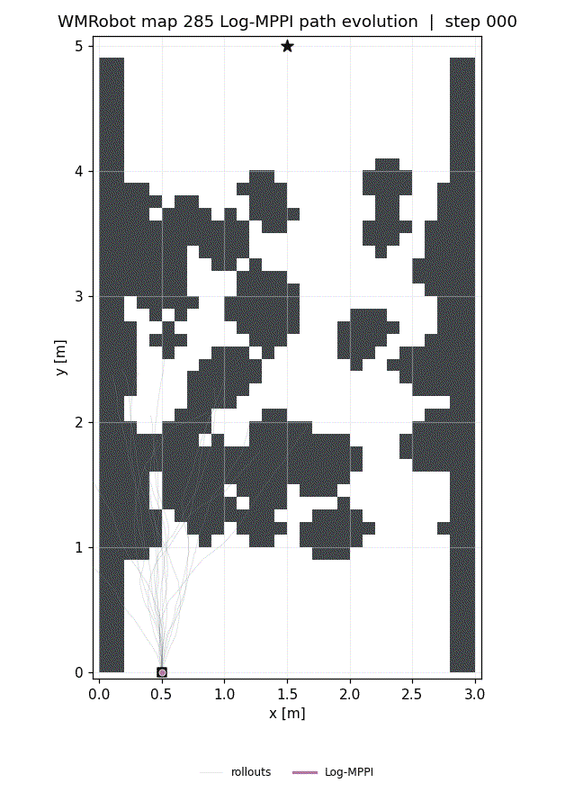
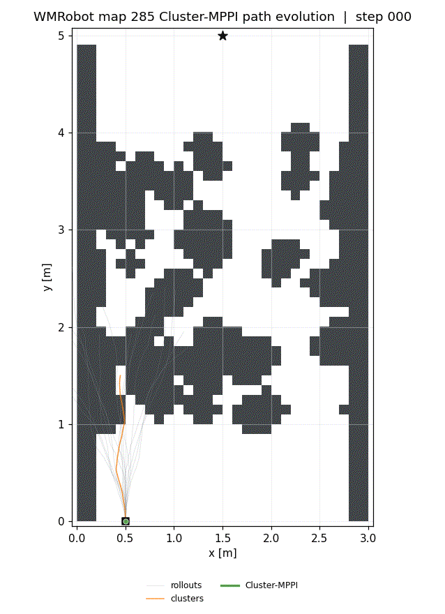
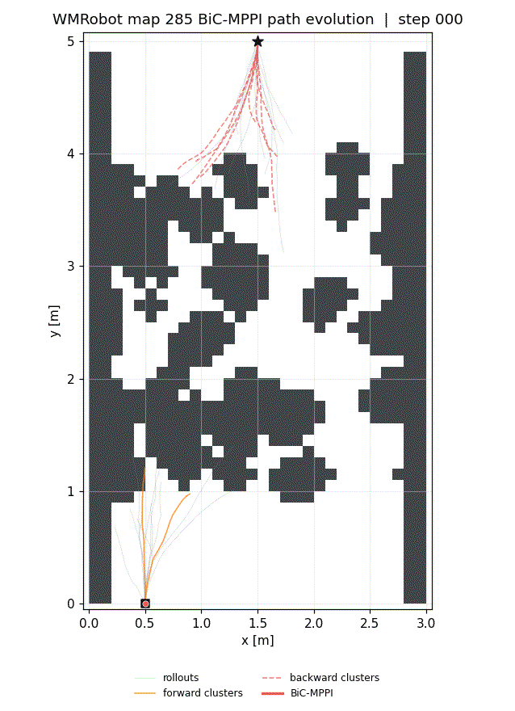
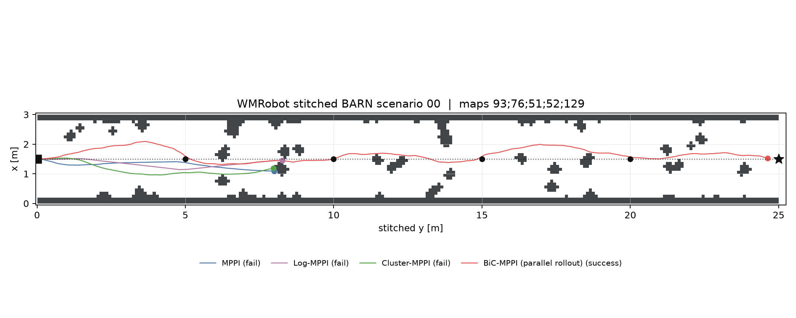
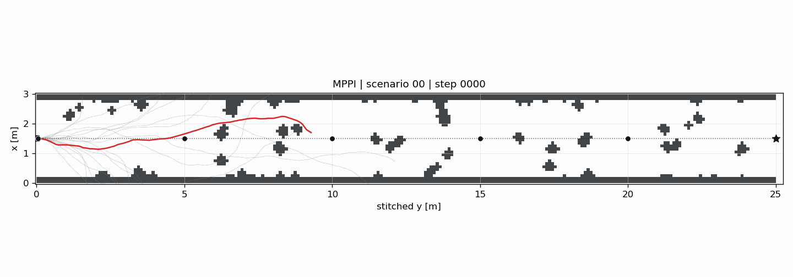
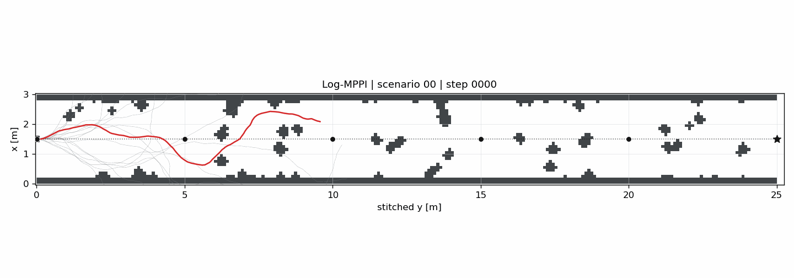
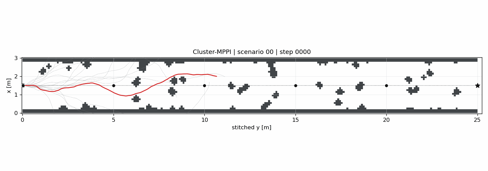

Abstract
This paper presents Kinodynamic Bidirectional Clustering Model Predictive Path Integral (BiC-MPPI), a sampling-based trajectory optimizer for long-horizon goal-reaching tasks in cluttered environments. BiC-MPPI retains multiple clustered forward branches from the current state and reverse-time heuristic branches from the goal, associates opposite-direction branch representatives, and uses the resulting connections as references for forward Guide MPPI refinement.
On 600 Ground-Vehicle Planning trials, BiC-MPPI achieved a 97.3% success rate, compared with 47.7–54.2% for the evaluated unidirectional baselines. On 240 simulated 6-DOF manipulator tasks, the best BiC-MPPI configuration achieved a 41.7% success rate, compared with 10.0–22.5% for the evaluated baselines. BiC-MPPI evaluates additional backward and guide rollouts; the paper therefore reports the runtime of each algorithmic stage separately.
Method
Bidirectional Branch Generation
Generate and cluster forward cost-to-come rollouts from the current state and reverse-time heuristic cost-to-go rollouts from the goal.
Branch Association
Associate forward and backward representatives using a connection metric, trim them at the nearest pair, and concatenate their segments into guide candidates.
Guide MPPI Refinement
Refine every connected candidate with forward rollouts from the current state, then execute the first control of the lowest-cost dynamically consistent trajectory.
Results
Ground-Vehicle Planning
97.3%
584 successes over 600 trials with BiC-MPPI-KMeans, versus 47.7–54.2% for the evaluated unidirectional baselines.
6-DOF Manipulator Planning
41.7%
100 strict successes over 240 tasks with BiC-MPPI-KMeans, versus 10.0–22.5% for the evaluated baselines.
Ground-Vehicle Planning
Results over 600 Ground-Vehicle Planning trials. Times are averaged over successful trials.
| Method | Succ. ↑ | SR [-] ↑ | Fail. ↓ | Coll. ↓ | Iter. ↓ | Total [s] ↓ | Roll. [s] | Clust. [s] | Conn. [s] | Guide [s] |
|---|---|---|---|---|---|---|---|---|---|---|
| MPPI | 325 | 0.542 | 275 | 18 | 144.3 | 0.330 | 0.330 | 0 | 0 | 0 |
| Log-MPPI | 286 | 0.477 | 314 | 8 | 153.6 | 0.291 | 0.291 | 0 | 0 | 0 |
| Cluster-MPPI-DBSCAN | 313 | 0.522 | 287 | 18 | 145.2 | 2.085 | 0.224 | 1.862 | 0 | 0 |
| Cluster-MPPI-KMeans | 287 | 0.478 | 313 | 13 | 151.3 | 2.693 | 0.161 | 2.532 | 0 | 0 |
| BiC-MPPI-DBSCAN Ours | 537 | 0.895 | 63 | 47 | 94.6 | 2.540 | 0.189 | 2.167 | 0.002 | 0.182 |
| BiC-MPPI-KMeans Ours | 584 | 0.973 | 16 | 10 | 84.1 | 3.026 | 0.093 | 2.356 | 0.023 | 0.554 |
Succ.: successful trials; SR: success rate; Fail.: failed trials; Coll.: collision trials. Stage times may not sum exactly to the total because of rounding and measurement overhead.
6-DOF Manipulator Planning
Results over 240 start–goal tasks under strict joint, end-effector, velocity, and collision-free conditions.
| Method | Succ. ↑ | SR [-] ↑ | Strict [-] ↑ | EE [-] ↑ | CF [-] ↑ | Iter. [steps] ↓ | Time [s] ↓ |
|---|---|---|---|---|---|---|---|
| MPPI | 50 | 0.208 | 0.250 | 0.379 | 0.708 | 135.0 | 3.821 |
| Log-MPPI | 53 | 0.221 | 0.254 | 0.375 | 0.721 | 134.5 | 3.805 |
| Cluster-MPPI-KM | 24 | 0.100 | 0.113 | 0.192 | 0.721 | 141.8 | 5.817 |
| Cluster-MPPI-DB | 54 | 0.225 | 0.258 | 0.383 | 0.721 | 134.8 | 5.617 |
| BiC-MPPI-KM Ours | 100 | 0.417 | 0.471 | 0.546 | 0.738 | 92.1 | 11.599 |
| BiC-MPPI-DB Ours | 96 | 0.400 | 0.467 | 0.529 | 0.733 | 85.5 | 4.554 |
KM: K-Means; DB: DBSCAN; EE: end-effector criterion; CF: collision-free rate. Iteration and wall time are averaged over successful trials only.
Key findings
- Bidirectional branch diversity provides explicit goal-side structure that forward-only rollout sampling lacks.
- Guide MPPI converts connected branch candidates into forward-dynamically consistent control sequences.
- The reliability gain requires additional clustering, connection, and guide-refinement computation; runtime is therefore decomposed by stage.
Qualitative Results
Path evolution on the same modified BARN map. The star marks the goal and the robot starts at the bottom of the map.




6-DOF Manipulator Planning
Simulated joint-space planning with task-space collision checking around an axis-aligned obstacle.
DBSCAN Radius Sensitivity
Sensitivity of the 2D experiments to the DBSCAN neighborhood radius εmax. Times are averaged over successful trials.
| εmax | Rollout [s] | Clustering [s] | Connection [s] | Guide [s] | SR [%] ↑ | Time [s] ↓ |
|---|---|---|---|---|---|---|
| 0.100 | 0.110 | 0.016 | 0.001 | 0.021 | 66.3 | 0.148 |
| 0.050 | 0.110 | 113.639 | 0.160 | 0.841 | 96.8 | 114.750 |
| 0.010 Main | 0.114 | 3.620 | 0.017 | 0.383 | 95.3 | 4.134 |
| 0.005 | 0.115 | 0.840 | 0.002 | 0.142 | 94.2 | 1.099 |
| 0.001 | 0.109 | 1.162 | 0.001 | 0.102 | 93.2 | 1.375 |
The main experiments use εmax = 0.01 as a reliability–runtime trade-off point. Although εmax = 0.050 gives the highest observed success rate of 96.8%, it requires 114.750 s of total elapsed computation.
SR: success rate; times: successful trials.
Waypoint-assisted Usage Case
A five-room WMRobot environment in which rooms are connected by coarse portal waypoints. All planners receive the same prior waypoint information.
BiC-MPPI uses parallel bidirectional rollouts to connect waypoint-guided segments, whereas the unidirectional baselines attempt the same long-horizon waypoint task without bidirectional connection. Across 10 waypoint-assisted scenarios, MPPI, Log-MPPI, and Cluster-MPPI do not reach the final goal. BiC-MPPI succeeds in 6 of 10 scenarios and reaches all six waypoints on average.

Waypoint-guided Path Evolution




| Method | Scenarios | SR [-] ↑ | Time [s] ↓ | Reached WP [-] ↑ |
|---|---|---|---|---|
| MPPI | 10 | 0.0 | 0.180 | 1.1 |
| Log-MPPI | 10 | 0.0 | 0.229 | 1.0 |
| Cluster-MPPI | 10 | 0.0 | 1.504 | 1.0 |
| BiC-MPPI Ours | 10 | 0.6 | 9.279 | 6.0 |
The result shows that BiC-MPPI can serve as a local bidirectional connector when coarse waypoint information is available, at the cost of additional computation.
SR: success rate; WP: waypoint.
BibTeX
@article{jung2024bicmppi,
title = {BiC-MPPI: Goal-Pursuing, Sampling-Based Bidirectional Rollout Clustering Path Integral for Trajectory Optimization},
author = {Jung, Minchan and Kim, Kwangki},
year = {2024},
journal = {arXiv preprint arXiv:2410.06493},
eprint = {2410.06493},
archivePrefix = {arXiv},
primaryClass = {cs.RO},
doi = {10.48550/arXiv.2410.06493},
url = {https://arxiv.org/abs/2410.06493}
}